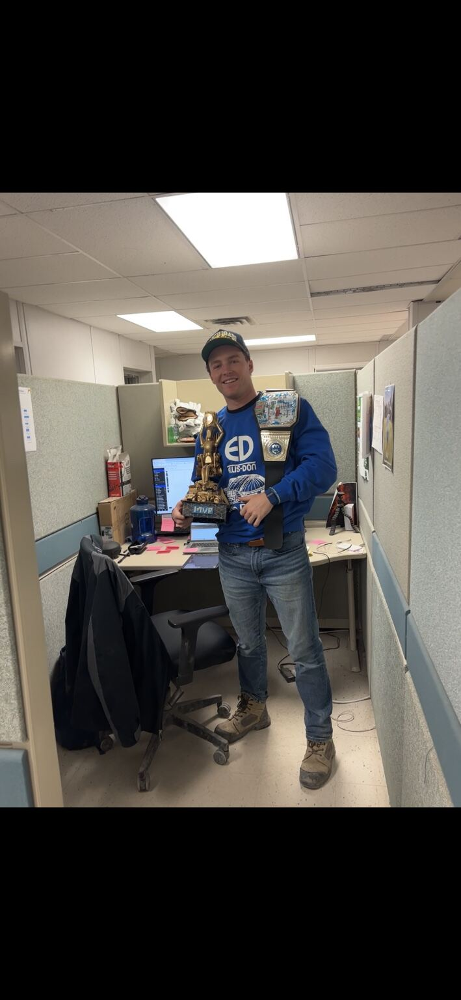

Mechanical Field Coordinator
EllisDon · Goodyear Plant Project
During my twelve-month internship, I supported mechanical construction and commissioning by connecting drawings, field information, subcontractor progress, and project documentation.
- Maintained field records, progress photos, daily reports, manpower information, and 360-degree site documentation.
- Managed and updated V-Plan drawings while tracking installation progress and completion.
- Supported HVAC, piping, pressure-testing, commissioning, and deficiency coordination.
- Developed a pressure-test and noise-calculation delineation tool to organize system scope and distances.
- Gained exposure to estimating, construction drawings, isometrics, and coordination across trades.
Recognition: Selected as the weekly workplace MVP for my contributions to the team.
